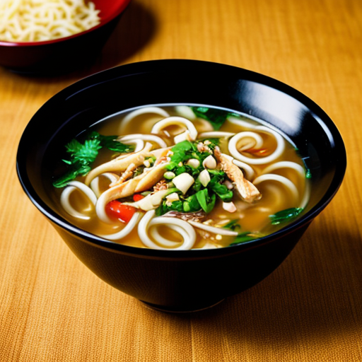

Noodle Soup Recipe

A classic and comforting soup featuring tender chicken, soft egg noodles, and colorful vegetables in a flavorful broth. Perfect for a chilly day or when you need a nourishing meal.
Ingredients
- 8 cups chicken broth
- 1 cup cooked chicken, shredded or diced
- 1 cup egg noodles
- 1 cup mixed vegetables (such as carrots, celery, and peas), chopped
- 1 small onion, chopped
- 2 cloves garlic, minced
- 1 teaspoon dried thyme
- Salt and pepper to taste
- Fresh parsley, chopped (for garnish)
Steps
- In a large pot or Dutch oven, sauté the chopped onion and minced garlic over medium heat until softened, about 5 minutes.
- Pour in the chicken broth and bring it to a boil.
- Add the chopped mixed vegetables and dried thyme. Reduce heat and simmer for 10-15 minutes, or until the vegetables are tender.
- Stir in the egg noodles and continue to simmer for another 8-10 minutes, or until the noodles are cooked through.
- Add the cooked chicken and heat through.
- Season with salt and pepper to taste.
- Ladle the soup into bowls and garnish with fresh chopped parsley before serving.
Home